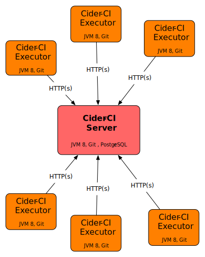
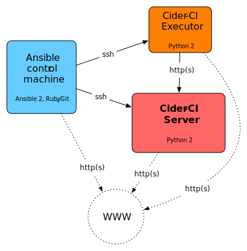
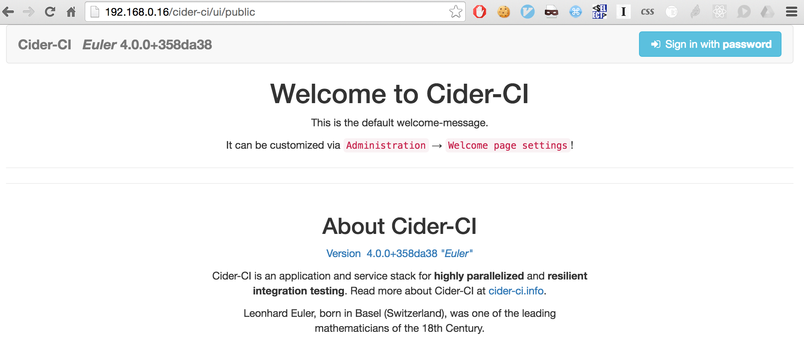
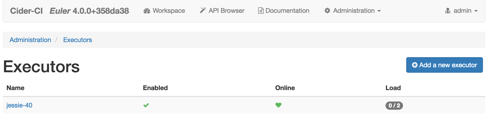

Setup and Deployment
This page guides through the process of installing a customizable Cider-CI environment. If you are new to installing Cider-CI consider the Quick Start Guide.
Table of Contents
- Introduction and Prerequisites
- Preparing the Machines
- Setting up an Inventory
- Running the Deploy
- Signing in and Testing the Installation
- Upgrading a Cider-CI Environment
- Next Steps - Where to go from here
Introduction and Prerequisites
A Cider-CI environment consists of one Cider-CI server and any number of Cider-CI executors. The technical requirements on the executor are a Java Virtual Machine of version 8 or later and Git of version 2.1 or later. The server requires additionally PostgreSQL of version 9.4 or later. We recommend at least 4GB of memory and at least two real CPU cores for the Cider-CI server. The requirements for Cider-CI executors depends largely on what it is used for. The Cider-CI executor process itself should have about 250MB of memory available.
It is possible to run both on the same machine but we don not recommend to do so. A single machine setup is possible and can be considered for smaller teams. Running one or even more executors on the same machine as the server can impact the performance and consequently the stability of the server.
The executors in Cider-CI act fairly autonomous. They pull work from the sever, and then process it without further interaction from the server. One of the benefits is that the only required connection is HTTP or preferably HTTPS from the executors to the servers. This feature eliminates a lot of trouble within firewall regulated environments since HTTP/HTTPS is likely possible.
It is feasible to install, configure and add a Cider-CI executor to an existing Cider-CI server manually. Setting up a Cider-CI server manually would be a time consuming and error prone challenge. We highly recommend to use the [Cider-CI Deploy Project] to set up the server.
The [Cider-CI Deploy Project] enables fully automatized installation, configuration and upgrading of your environment. It supports the Linux based Ubuntu 16.04 "Xenial" or Debian 8 "Jessie" operating systems out of the box. The automated deploy requires Ansible of version 2.1 or later on the control machine. We will discuss the set-up in the next section.
We assume that we are operating on stock installations of Debian Jessie or Ubuntu Xenial for the reminder of this documentation. The procedure is well tested for unmodified systems installed from official releases.

Preparing the Machines
Ansible is a comparatively simple deploy environment. There is no server component but there is a machine from which the deployment is carried out. This is called the control machine. If you target a single machine setup it stands to reason to use this machine also as the Ansible control machine. We also frequently use the Cider-CI server machine as the control machine.
In the general case the machines are distinct. During the deployment the control machine needs to access the target machines via the ssh protocol. All machines need access to the Internet via http(s) to download artifacts such as packages for the system and also the packaged Cider-CI server itself.
We recommend to set up password-less ssh access from the control machine to the root account of the target machines. If the deploy via Ansible seems to hang indefinitely assert that ssh root@your-target-machine works without problems.
Every controlled target machine needs a Python installation to be accessible by Ansible. This can be easily installed for our target operating Systems Ubuntu Xenial or Debian Jessie from system packages:
1apt-get install -y python2.7
The control machine needs Ansible 2.1 or later. You can read the Ansible Installation documentation how to install it for your operating system. If you are using Ubuntu Xenial you can proceed as follows:
This will install some libraries and binaries into /usr/local. The command diverges from the official Ansible Installation documentation slightly and circumvents some issues we encountered recently.

Setting up an Inventory
We will use an example environment of one Ubuntu Xenial machine "xenial-16" used as the server and one Debian Jessie machine "jessie-40" as an executor.
We start out with in an new and empty directory. You can alternative start by cloning the Git project Cider-CI Demo-Inventory. We first create a hosts file with the following contents. You would replace the values of ansible_host with the IP or names of your machines.
It is now time to connect our inventory the Cider-CI project. We clone it into our inventory directory. If you decide to mange you inventory with Git - which is highly recommended - you could and should mange the cider-ci folder as Git submodule.
The [Cider-CI Deploy Project] comes with a set of predefined configuration variables. We will it as a base configuration. We could copy the file but linking it has the advantage that new configuration variables introduced with an update of Cider-CI will be immediately available when we update the cider-ci project.
We will for now just override one variable the ci_server_external_hostname. This one is needed so our executor jessie-40 knows where to find its server xenial-40. We create the file group_vars/cider-ci_hosts.yml with the following contents.
It is very important to use the correct file names! We are using the precedence rules of Ansible here. The implicit all.yml group in the inventory has a lower precedence then the explicit cider-ci_hosts group as defined in our hosts file. If we do not use matching file names corresponding to groups or hosts the variables defined within will not be used!
Will will now set up one more and last file: data.yml. This one can be used to mange users and repositories available in your Cider-CI instance. Both could also be set via the user-interface. But managing them via a configuration file is a much better solution with respect to configuration management and documentation. Using this file also solves the chicken-and-egg problem of needing an initial user to sign in via the user interface.
The data.yml files allows templating via Ansible respectively Jinja2. So {{ci_master_secret}} will be replaced by the actual value of the ci_master_secret variable.
Running the Deploy
We will now perform the actual deploy. It must be started from within the [Cider-CI Deploy Project] by supplying our inventory hosts file.
The deploy will take some time which largely depends on the connection speed to the Internet.
Signing in and Testing the Installation
We can now open the user interface in the browser via http://http://192.168.0.16 where the IP should be replaced by your IP or hostname respectively. We will be redirected to the welcome page.
The password for the admin user can now be found in the master_secret.txt file in our inventory directory.

After signing in we follow the links Administration → Excutors where we should find the configured executor up and running.
The status of the various services can be inspected by following the links Administration → Server status.
We can finally run some job from the configured Cider-CI Bash Demo Project in the same way es described in the Quick Start Guide.

Upgrading a Cider-CI Environment
Upgrading your Cider-CI is fairly simple once you have set up an inventory directory. In our working example we would update the cider-ci project and then simply rerun the deploy again.
Upgrading a Cider-CI Environment is possible if the minor version (see Semantic Versioning) of Cider-CI has changed. Upgrading across major versions is not guaranteed to be possible.
Next Steps - Where to go from here
The Cider-CI Demo-Inventory discussed here is a good but simplistic start. The ZHdK Cider-CI Inventory uses more advanced configuration features.